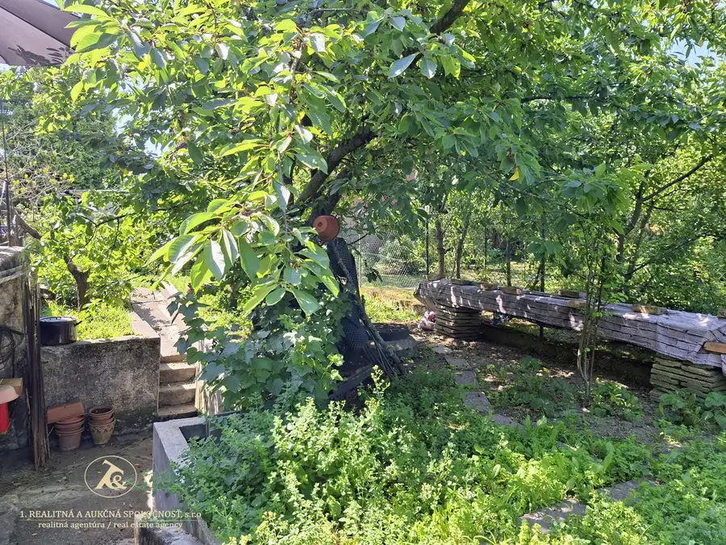
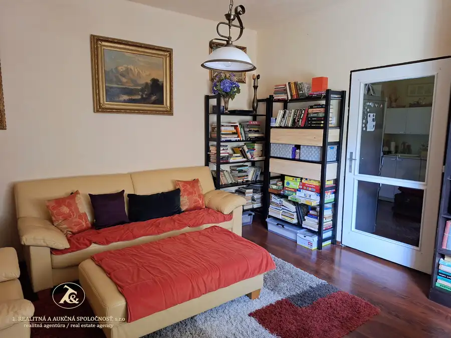
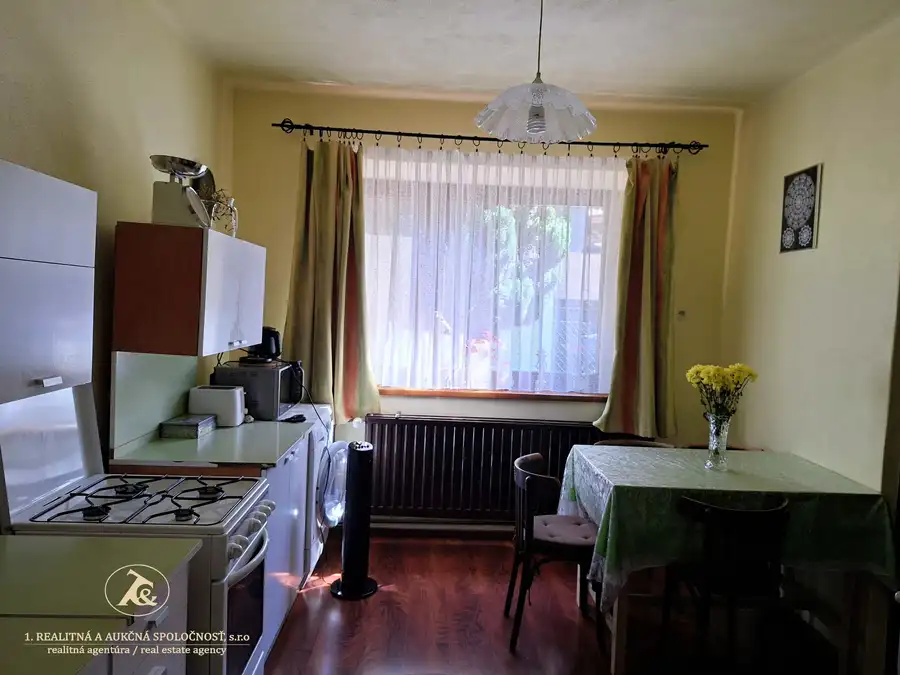
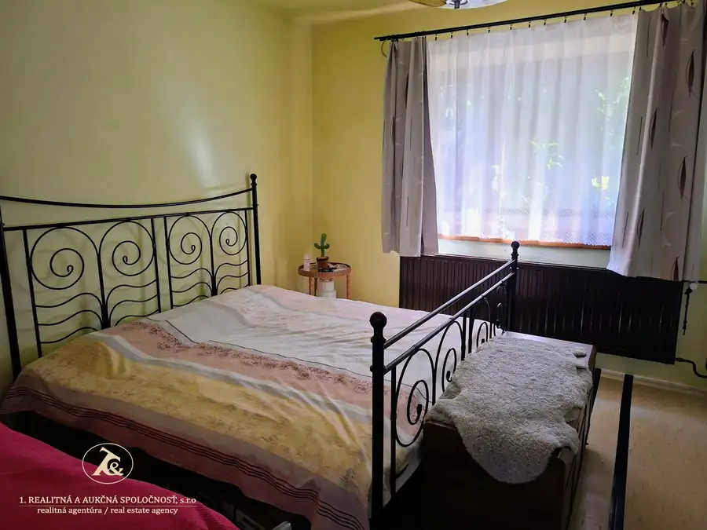
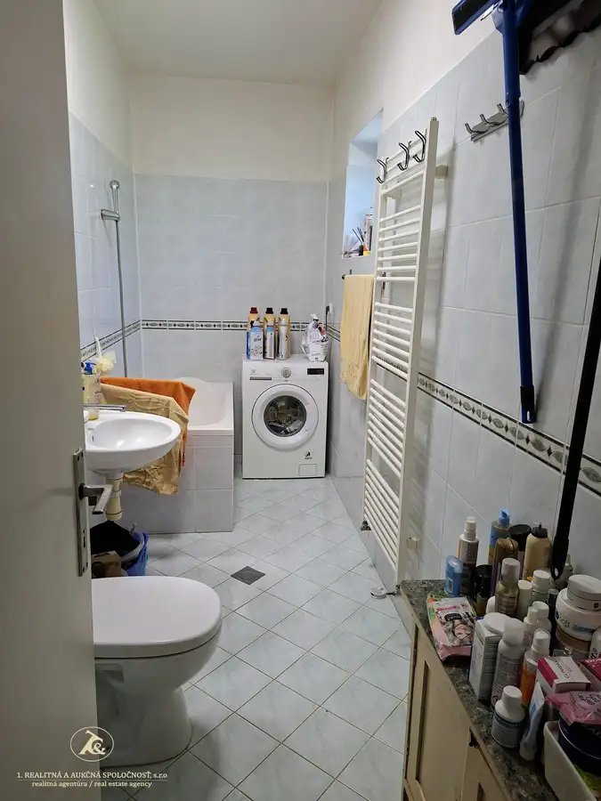

Rodinný dom s investičným potenciálom v prestížnej lokalite - Bratislava IV., Karlova Ves, líščie údolie
Karlova Ves, Bratislava






- Plocha65 m²
- StavPôvodný stav
- VlastníctvoOsobné
O nehnuteľnosti
V jednej z najžiadanejších rezidenčných lokalít Bratislavy ponúkame na predaj rodinný dom postavený na pozemku o veľkosti 387 m. RD sa nachádza v tichej časti Líščieho údolia, obklopená zeleňou, s výbornou dostupnosťou do centra mesta a kompletnou občianskou vybavenosťou na dosah.Táto ponuka predstavuje jedinečnú príležitosť pre klientov, ktorí hľadajú pokojné bývanie.Základné informácie: - pozemok má výmeru 387 m2- 2 izbový rodinný dom (dispozičné riešenie : vstupná predsieň, spálňa, kuchyňa z nej je vstup do obývacej izby, komora, kúpeľňa s vaňou spojená s toaletou)- čiastočne podpivničený- na dome bola cca pred 10 rokmi rekonštrukcia strechy vrátane výmeny krovu a novej strešnej krytiny, nová fasáda domu, nové okná a vstupné bezpečnostné dvere do domu- plynový kotol Vaillant (5ročný) zabezpečujúci vykurovanie a ohrev teplej vody- inak je dom v pôvodnom stave - ideálny na rekonštrukciu podľa vlastných predstáv - inžinierske siete na pozemkuInvestičný potenciál:Veľkou výhodou tejto nehnuteľnostsi je jej budúci rozvojový potenciál. Podľa ÚPI je na pozemku možná výstavba 4 nadzemných podlaží, čo otvára široké možnosti pre realizáciu moderného rodinného domu.Lokalita, ktorá sa zachováva svoju hodnotu :Líščie údolie patrí medzi najprestížnejšie adresy mestskej časti Karlova Ves. Ponúka jedinečné spojenie pokojného bývania v zeleni s rýchlou dostupnosťou do centra Bratislavy. V blízkosti sa nachádzajú školy, škôlky, obchody, zdravotné strediská, zástavky MHD, športoviská, zelený park SNP, aj množstvo cyklotrás a turistických chodníkov vedúcich do lesov Malých Karpát.Ak hľadáte miesto, kde môžete vytvoriť domov podľa vlastných predstáv, radi vám poskytneme bližšie informácie a dohodneme osobnú obhliadku.Kúpna cena : 390.000,- EurKontakt : Zlatica Sedláčková, 0903 205 803, sedlackova@realitna.skV termíne od 18.8.2026 do 31.08.2026 prosím kontaktovať ma ohľadom záujmu o nehnuteľnosť, mailom z dôvodu dovolenky, ozvem sa vám 01.09.2026. Ďakujem za pochopenie !
Parametre
- Druh
- Rodinný dom
- Dátum zverejnenia
- 28. 09. 2026
- Plocha pozemku
- 387 m²
- Počet izieb / miestností
- 2
- Stav nehnuteľnosti
- Pôvodný stav
- Telekomunikácie
- Káblová TV
- Terén pozemku
- Rovinatý
- Typ
- Predaj
- Vlastníctvo
- Osobné
- Vybavenie
- Terasa, Pivnica, Verejné parkovanie, Špajza
- Vykurovanie
- Lokálne
- Úžitková plocha
- 65 m²
Kde to je


Mohlo by Vás zaujímať
 PozemokNové
59 000 €Záhrada s chatkou vhodná na relax, aj pestovanie ovocia a zeleniny, 4 áre, Podunajské Biskupice
Podunajské Biskupice, Bratislava
412 m²
PozemokNové
59 000 €Záhrada s chatkou vhodná na relax, aj pestovanie ovocia a zeleniny, 4 áre, Podunajské Biskupice
Podunajské Biskupice, Bratislava
412 m²
 DomNové
449 999 €Váš nový domov - 4 rodinné domy v uzaretom rezidenčnom areáli v Bernolákove, novostavba
Bernolákovo
134.14 m²
DomNové
449 999 €Váš nový domov - 4 rodinné domy v uzaretom rezidenčnom areáli v Bernolákove, novostavba
Bernolákovo
134.14 m²
 BytNové
288 000 €Moderný 3-izbový mezonetový byt s balkónom v centre mesta Pezinok
Pezinok
3-izbový84.08 m²4. podlažie
BytNové
288 000 €Moderný 3-izbový mezonetový byt s balkónom v centre mesta Pezinok
Pezinok
3-izbový84.08 m²4. podlažie